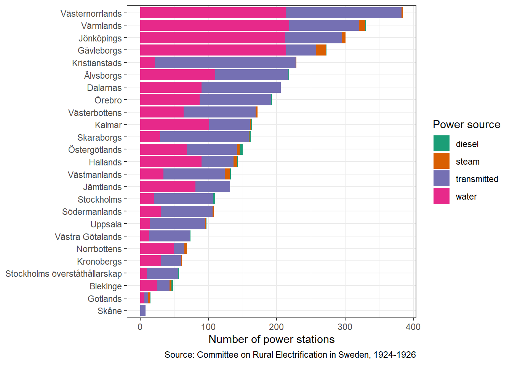
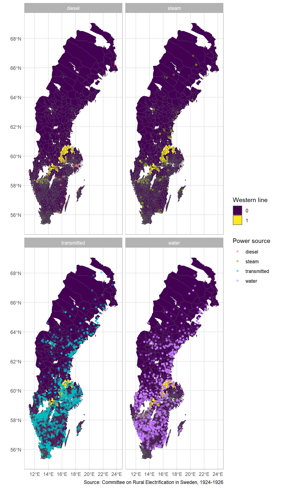
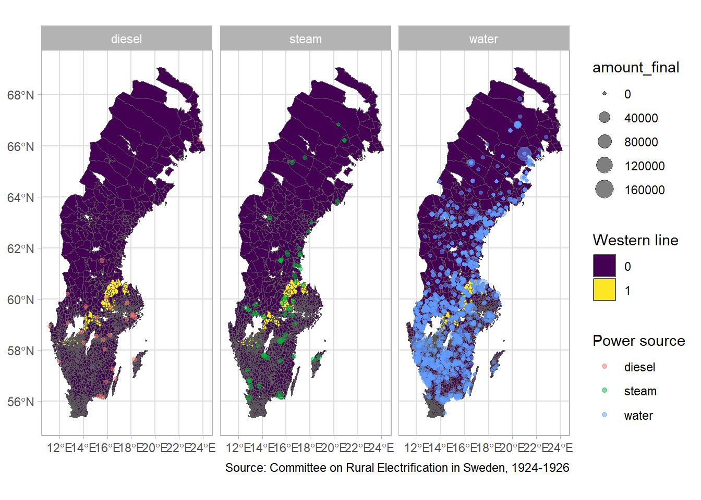
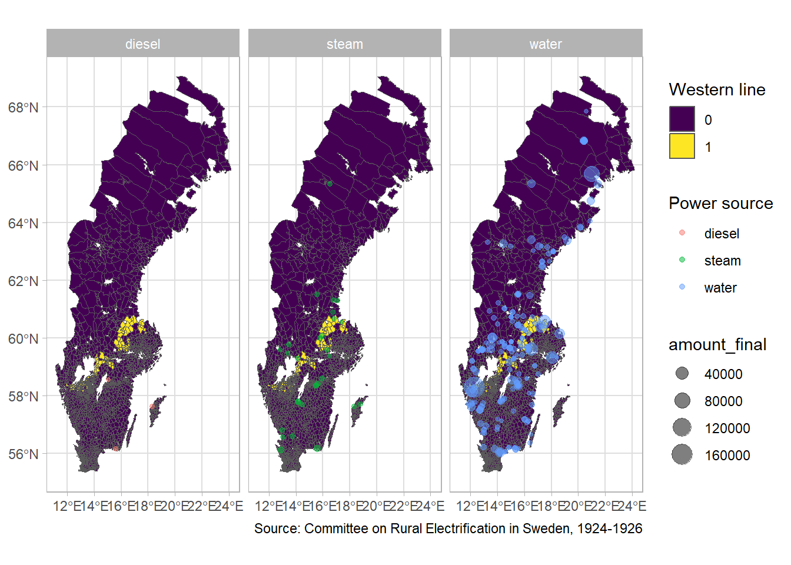

How much of an advantage did you have being connected to the Western Line?
Context
I have now completed digitized all of the report of the committee on rural electrification in Sweden, led by engineer Nils Ekwall. The reports were published at the county level from 1924 to 1926.
The reports include a great deal of information on the rate at which the various counties have been successful in electrifying their rural areas. The reports also note how much it will cost to complete the electrification of the county.
At the end of the reports are a set of tables that include information on every power station in the county. The tables include the name of the power station, the name of the owner (be it a city/municpality or a factory owner), the location, the source of power, and the amount of power generated. 1
This is what the data looks like:
| user | name | location | source_final | amount_final |
|---|---|---|---|---|
| Trollhätte kraftverk | Trollhättan | Trollhättan | water | 165000 |
| Trollhätte stads el .- verk | Ab. från Trollhätte kraft- verk | NA | transmitted | NA |
| Ortsdistributionen i Hjul- kvarn etc. | Trollhättan | NA | water | 1500 |
| Nydqvist & Holms A .- B. | Ab. från Trollhätte kraft- 1 verk | NA | transmitted | NA |
| Trollhätte kanal | 2 | Trollhättan, Vänersborg | transmitted | NA |
| A .- B. Stridsberg & Björck Trollhätte kraftverk | Fördelningscentralen i Stallbacka | Trollhättan | transmitted | NA |
| Diverse industrier å Stall- backa | Ab. från Trollhätte kraft- verk | NA | transmitted | NA |
| Vargöns A .- B. Ortsdistributionen vid Varg- ön m. fl. | Vargöns A .- B. | V. Tunhem 2 | transmitted | NA |
| Vänersborgs el .- verk | Trollhätte kraft- verk | Vänersborg | transmitted | NA |
| Nygårds egendom | NA | V. Tunhem | transmitted | NA |
| V. Tunhems el. distr .- fören. | 2 | NA | transmitted | NA |
Classifying the source of power
The source of power is one of four categories: water, steam, diesel or ‘transmitted’. The last category is the most interesting in our current project. It refers to power that is transmitted from another power station. The reports include the name of the power station that is the source of the power.
In the graph below I show the number of power stations in each county and the source of power.

We can also plot them on a map of Sweden, here we show the counties and the western line in Yellow. The Western Line here is taken from More Power to the People.

Beyond the number of connections, we can also look at the installed capacity.
Here is a map of installed capacity for all of the power generating stations.

Here is the same map, but only showing large power stations.
I think that the most compelling case here is that along the western line there are a small number of very large hydroelectric power stations, whereas north of this, there are lots of smaller power stations, but transmitting power to other places. I need to come up with a way to turn this into an F-stat greater than 10!

Because at the moment, my regression has the wrong sign!
How about we define a new set of treated parishes, instead of using the Western Line from More Power to the People?
This is the next step.
Footnotes
Some counties include additional information such as the area of the county it electrifies, and how much of the power is used for lighting or dirving motors etc. Because this information is not available for every county, we restrict the variables of interest to those mentioned above.↩︎